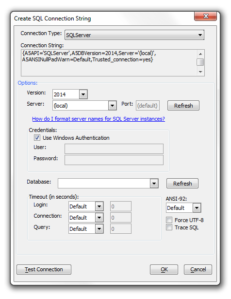
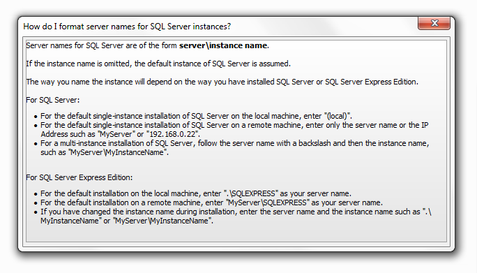

SQL Server connection string dialog help
When you create a connection string for SQL Server, it's easy to forget how
to format the instance names. As a result, there is a dialog help within the
Create SQL Connection String Dialog
specifically for the SQLServer connection type.
If you have not used this feature, one way to
reach the Create SQL Connection String Dialog is by clicking on the
Tools
tab at the top of the screen. Under Tools,
select External Databases and under External
Databases select AlphaDAO connections. This should
load the AlphaDAO connections dialog, if you have nothing to connect click the
New button at the bottom of the screen. This
will load the New AlphaDAO connection Dialog. Type
in the name of your connection and click Build.
This should take you to the Create SQL Connection String
Dialog. There are other ways to reach this dialog, you can visit the
Create SQL Connection String Dialog page for more examples. Once you are in
the Create SQL Connection String dialog click on the Connection
Type drop down and choose the SQLServer option from the bottom
of the list. You should see the following...
|

Procedure:
1. Click on the How do I format server names for SQL Server instances? link, you will see a helpful dialog.

If you have forgotten the instance name, you can check it in SQL Server Configuration Manager or SQL Server Management Studio.